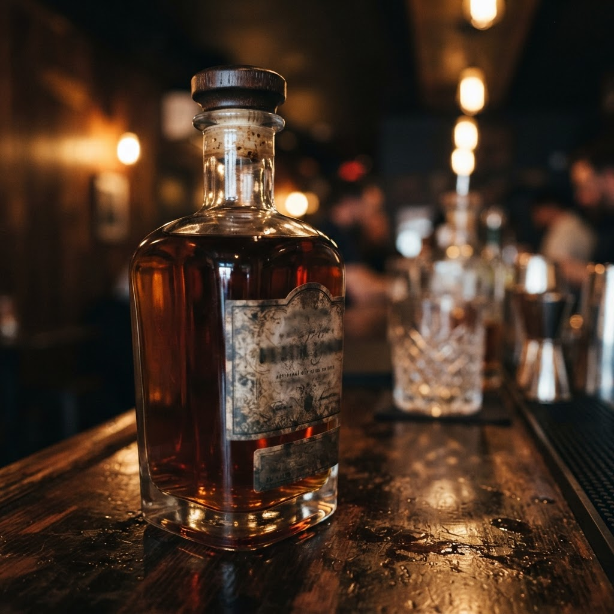
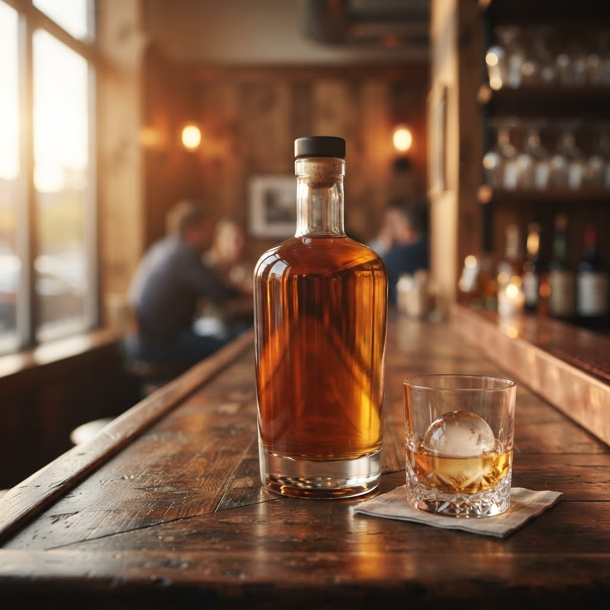
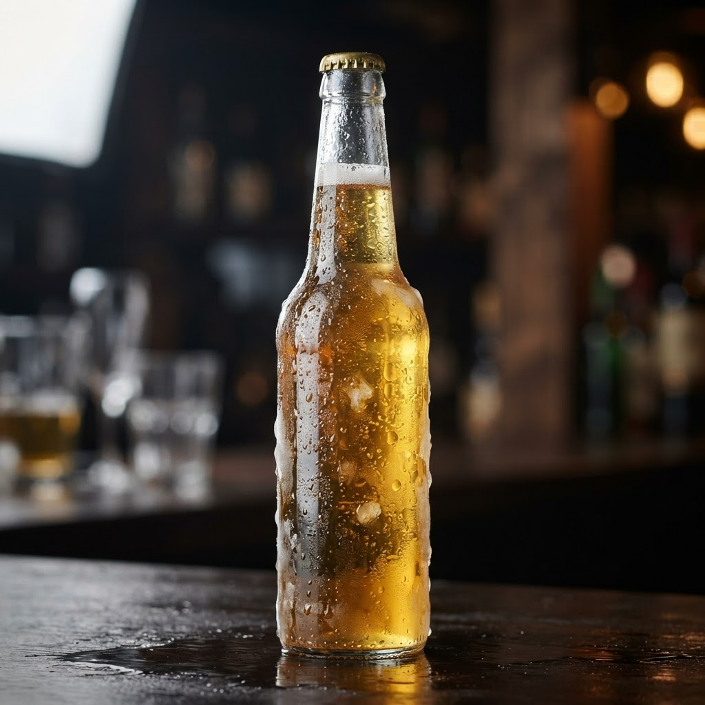

Доставка алкоголя на дом с доставкой в Калининском районе

Ищете, где оформить заказ на вечер в Калининском районе? Ночная доставка алкоголя на дом с доставкой в Калининском районе решает вопрос оперативно, когда магазины уже закрыты, а гости еще не разошлись.
Почему доставка алкоголя на дом с доставкой в Калининском районе выгоднее
Традиционный поход в круглосуточный магазин ночью — это всегда лотерея с очередями, погодными условиями и ассортиментом. В сравнении с самостоятельным выходом, сервис привозит напитки прямо к двери. Вам не нужно прерывать застолье или тратить время на дорогу по темным улицам. Курьеры отлично знают навигацию района, что позволяет минимизировать ожидание. Мы держим фокус на скорости: логистика выстроена так, чтобы вы получали заказ максимально быстро. Качество продукции контролируется на этапе комплектации, поэтому вы защищены от случайных покупок неликвида. Это чистый прагматизм: вы оплачиваете комфорт, экономите силы и остаетесь в безопасности собственного дома. Процесс заказа прозрачен: выбрали, подтвердили, дождались. Мы убираем фактор стресса из вашего вечернего досуга, обеспечивая бесперебойное наличие напитков на столе.
Преимущества ночной доставки за час
Главное отличие нашего проекта от стандартных служб — строгое соблюдение регламента по времени. Мы специализируемся на срочных выездах в ночное время. Когда счет идет на минуты, а до ближайшей точки продаж идти далеко, наш курьер уже находится в пути к вам. Сравните: самостоятельная покупка ночью занимает от получаса до часа с учетом сборов и очереди, в то время как наша логистическая модель позволяет уложиться в один час даже при высокой загруженности дорог. Мы используем специализированный транспорт и оптимальные маршруты, что исключает задержки. Такая оперативность важна для тех, кто ценит свое время и хочет продолжать общение, не отвлекаясь на бытовые задачи. Мы гарантируем стабильность работы сервиса в ночные часы, когда другие компании уже прекращают прием заявок. Надежность и системный подход делают наш сервис основным выбором для жителей района.
Что делать, если заказ опаздывает больше чем на час?
Мы строго контролируем время в пути для каждого клиента. Если курьер задерживается, логист оперативно свяжется с вами для уточнения деталей. Мы работаем на результат, чтобы ваш вечер прошел по плану без лишних ожиданий.
Итог
Итог всегда один: назвать следующий шаг покупателю — оформить заказ и получить его в течение часа в своём районе.
Заказать доставку
Оформите заказ сейчас: привезём за 40-60 минут в любой район Петербурга, круглосуточно.
Призыв
Со скольки продают алкоголь в санкт петербурге с доставкой в Калининском районеЖивете в Калининском районе и планируете вечер, но запасы подошли к концу? В Санкт-Петербурге логистика отлажена так, что со скольки продают алкоголь в Санкт…
Доставка пива на дом спб с доставкой в Калининском районеКалининский район активно застраивается, и жителям часто не хватает привычного сервиса под боком в ночное время. Поэтому доставка пива на дом в СПб с доставк…